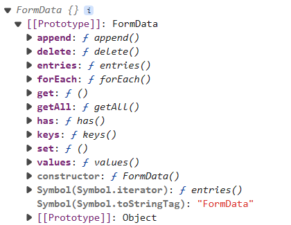

- 表单默认事件
-
.默认情况下，表单提交时，数据需要提交给后端处理，页面会发生跳转
.前端要拿数据，需要阻止表单的默认行为；类似的还有 <a>
<form action=""></form>
form.addEventListener('submit', (e) => {
e.preventDefault();
})
或
form.addEventListener('submit', () => {
return false;
})
1. 可以通过元素逐一获取，很不方便；
input.addEventListener('change', () => {
console.log(input.value);
})
2. 也可以使用 form 构造的 FormData 集中获取
- FormData
-
FormData(src)：构造函数；需要一个数据源参数，如表单
formdata.append(name, value)：添加
formdata.get(name)：获取属性第一个值
formdata.getAll(name)；获取所有值，返回的是一个数组
formdata.delete(name)：删除属性
[]console.log(formdata) 打印出来的结果 始终为FormData {}
它有一个隐藏域：所有的操作对象的方法全部是在它的原型中

- 获取表单数据
-
1. 提交时构造数据 submit
2. 数据构造完毕后，提取数据 formdata；如果提交后，马上获取，有可能数据还未构造完毕，导致失败
- [] 数据少的时候，直接获取
-
let form = document.querySelector('form');
form.addEventListener('submit', (e) => {
e.preventDefault();
new FormData(form);
})
form.addEventListener('formdata', (e) => {
const data = e.formData;
console.log(data.get('uname'));
})
- 甚至可以直接获取
-
let form = document.querySelector('form');
let fd = new FormData(form);
console.log(fd);
fd.forEach((val, key) => {
console.log(val, key);
})
- [] 数据多的时候，通过遍历获取
-
let form = document.querySelector('form');
form.addEventListener('submit', (e) => {
e.preventDefault();
new FormData(form);
})
form.addEventListener('formdata', (e) => {
const data = e.formData;
for (const value of data.values()) {
console.log(value);
}
})
- FormData转化为JSON[进阶]
-
function FormData2JSON(formdata) {
var json = {};
var entries = formdata.entries();
var item = entries.next();
console.log(item);
while (!item.done) {
json[item.value[0]] = item.value[1];
item = entries.next();
}
return json;
}
- 将JSON转化为FormData[进阶]
-
function JSON2FormData(json) {
var formdata = new FormData();
for (let key in json) {
formdata.append(key, json[key]);
}
return formdata;
}